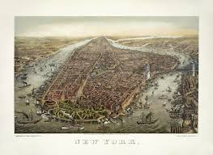
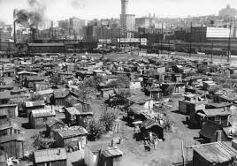

New York City has a rich and dynamic history that spans over four centuries. Originally inhabited by the Lenape people, the area was first explored by European settlers in 1609 when Henry Hudson arrived under the Dutch East India Company. By 1624, the Dutch had established a settlement called New Amsterdam on the southern tip of Manhattan Island. In 1664, the English seized control and renamed it New York in honor of the Duke of York. The city played a pivotal role in the American Revolution, serving as the site of several key battles and later becoming the first capital of the United States in 1789, where George Washington took his presidential oath. During the 19th century, New York grew rapidly as a hub for commerce, industry, and immigration. Ellis Island opened in 1892, becoming the primary gateway for millions of immigrants seeking a better life in America. Iconic landmarks like the Brooklyn Bridge and the Statue of Liberty, which was a gift from France in 1886, became symbols of the city’s growth and diversity. By the early 20th century, NYC had established itself as a global cultural and financial capital, with Wall Street driving the economy and Broadway emerging as the center of theater and entertainment. The city also faced challenges, including the Great Depression, which deeply affected its residents, and the 9/11 attacks in 2001, which profoundly shaped its modern identity. Despite these hardships, New York City has remained resilient, rebuilding and continuing to thrive as a beacon of hope and innovation. Today, it is a vibrant metropolis of over 8 million people, known for its iconic skyline, cultural institutions like the Metropolitan Museum of Art and Carnegie Hall, and its role as a melting pot of cultures and ideas. From its colonial beginnings to its current status as a global powerhouse, New York City’s history is a testament to its enduring spirit and ability to adapt to change.
 